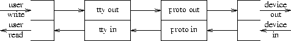
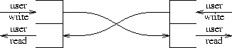

Figure 1. Configuration after device open.
Simple extensions provide new ways of establishing communication. In our system, the traditional Unix IPC mechanism, the pipe, is a cross-connected stream.
A generalisation of file-system mounting associates a stream with a named file. When the file is opened, operations on the file are operations on the stream.
Open files may be passed from one process to another over a pipe.
These low-level mechanisms allow construction of flexible and general routines for connecting local and remote processes.
The Ninth Edition version of Unix (TM) operating system is used in the Information Sciences Research Division of AT&T Bell Laboratories, and at a few sites elsewhere. It is named, by our custom, after its manual.
The work reported here describes convenient ways for programs to establish communication with unrelated processes, on the same or different machines. In particular, we study how to design the interface that programs use to request remote and local services, how the operating system can aid connection to the services, and how to make it easy to write the servers. Typical problems we hope to simplify are: what code has to be put into a mailer program to send mail to a user on another machine? How does a remote-login program establish contact with its destination system? When a remote file system is mounted, what operations must be performed to find its server? Is there a uniform way of turning the name of a service into a connection to the service itself?
The communication we are interested in is conducted by ordinary read and write calls, occasionally supplemented by I/O control requests, so that it resembles--and, where possible, is indistinguishable from--I/O to files. Moreover, we wish to commence communication in ways that resemble the opening of ordinary files. Thus, our approach is, in network parlance, connection-oriented. That is, it proposes routines that turn a client's string naming a service into a file descriptor that connects to the server. In our examples, the connection usually involves a reliable, duplex channel over which data can be sent rapidly, while the establishment of the channel may be moderately expensive. Although this approach implies a certain bias, it is not so limiting as it may seem; for example, the `server' may be a program that broadcasts, or sends datagram packets on a particular network.
The Eighth Edition system introduced a new way of communicating with terminal and network devices [1], and a generalisation of the internal interface to the file system [3]. Because the new mechanisms build on these ideas, we review the nomenclature and mechanisms of our I/O and file systems.
A stream is a full-duplex connection between a process and a device or another process. It consists of several linearly connected processing modules, and is analogous to a Shell pipeline, except that data flows in both directions. The modules in a stream communicate by passing messages to their neighbours. A module provides only one entry point to each neighbour, namely a routine that accepts messages.
At the end of the stream closest to the process is a set of routines that provide the interface to the rest of the system. A user's write and I/O control requests are turned into messages sent along the stream, and read requests take data from the stream and pass it to the user. At the other end of the stream is either a device driver module, or another process. Data arriving from the stream at a driver module is transmitted to the device, and data and state transitions detected by the device are composed into messages and sent into the stream towards the user process. Pipes, which are streams connecting processes, are bidirectional; a writer at either end generates stream messages that are picked up by the reader at the other.
Intermediate modules process messages in various ways. They come in pairs, for handling messages in each of the two directions, and their interfaces on the two sides are identical.
The end modules in a device stream become connected automatically when the process opens the device; streams between processes are created by a pipe call. Intermediate modules are attached dynamically by request of the user's program. They are addressed like a stack with its top close to the process, so installing one is called `pushing' a new module. Stream modules are part of the operating system kernel, but because they transmit messages, and streams can connect processes, it is plausible to transmit a stream through a user program.
For example, Figure 1 shows a stream device that has just been opened. The top-level routines, drawn as a pair of half-open rectangles on the left, are invoked by users' read and write calls. The writer routine sends messages to the device driver shown on the right. Data arriving from the device becomes messages sent to the top-level reader routine, which returns the data to the user process when it executes read.
Figure 1. Configuration after device open.
Figure 2 shows a stream with intermediate modules. This arrangement might be used when a terminal is connected to the computer through a network. The leftmost intermediate module carries out processing (such as character-erase and line-kill) needed for terminals, while the rightmost intermediate module does the flow- and error-control protocol needed to interface to the network.

Figure 2. Configuration for network terminals.
Finally, Figure 3 shows the connections for a pipe.

Figure 3. A pipe.
Weinberger3 generalised the Unix file system by identifying a small set of primitive operations on files (read, write, look up name, truncate, get status, etc.: a total of 11) and modifying the mount request so that it specifies a file system type and, where appropriate, a stream. When file operations are requested, the calls to the underlying primitives are routed through a switch table indexed by the type. Where the standard file system type performs operations directly on a disk, a second type generates remote procedure calls across the associated stream. At the other end of the stream, which usually goes over a network to another machine, is a server process that answers the calls to read and write data and perform the other operations. This scheme thus provides a remote file system; its structure resembles that used by others, for example AT&T's RFS [5]. and Sun Microsystems' NFS [6].
Killian [4] added a file system type that appears to be a directory containing the names (process ID numbers) of currently running processes. Once a process file is opened, its memory may be read or written, and control operations can start it or stop it. This simplifies the construction of sophisticated debuggers, for example Cargill's process-inspector pi[7].
Generalised file systems can support interesting forms of interprocess communication, whereby merely naming a file entails significant computation; see for example discussions of the Face Server [8]. or Sun Microsystems' Automounter [9]. In this paper we will discuss less exotic uses of generalised mounting.
Traditional Unix systems provide few ways for a process to establish communication with another. The oldest one, the pipe, has proved astonishingly valuable despite its limitations, and indeed remains central in the design we shall describe. A pipe is a communication channel created in a particular process, an end of which may be passed to descendants of that process. Because it has no externally-visible name, it is useless for communicating between unrelated processes.
More recently, AT&T's System V has offered a variety of communication mechanisms including semaphores, messages, and shared memory. They are all useful in certain circumstances, but programs that use them are all special-purpose; they know that they are communicating over a certain kind of channel, and must use special calls and techniques. System V also provides named pipes (FIFOs). Their names reside in the file system, and ordinary I/O operations apply to them. They can provide a convenient place for processes to meet. However, because the messages of all writers are intermingled, writers on the same FIFO must observe a carefully designed, application-specific protocol when using them. Moreover, traditional FIFOs supply only one-way communication; to receive a reply from a process reached through a FIFO, a return channel must be constructed somehow.
Berkeley's 4.2 BSD system10 introduced sockets (communication connection points) that exist in domains (naming spaces). The design is powerful enough to provide most of the needed facilities, but is uncomfortable in various ways. For example, unless extensive libraries are used, creating a new domain implies additions to the kernel. Consider the problem of adding a `phone' domain, in which the addresses are telephone numbers. Should complicated negotiations with various kinds of automatic dialers be added to the kernel? If not, how can the required code be invoked in user mode when a program calls 4.2 BSD's connect primitive? One group, for example, wanted to add dial-up Internet communication to the BSD system [11]. Their solution adds a pseudo-device to the kernel, and generates messages on this device when the networking code detects attempts to send packets to an unconnected destination. A user-level daemon process reading the pseudo-device dials the other system, then adjusts the kernel's routing tables to use the serial line.
Another problem with the socket interface is that it exposes peculiarities of the domain; various domains support very different kinds of name (for example, 32-bit Internet address versus alphabetic string), and it is difficult to deal with the names in a general way. Similarly, the details of option processing and other aspects of each domain's protocols complicate an interface that attempts generality.
Two small additions to the operating system allowed us to build a variety of communication mechanisms, which will be described below.
Traditionally, the mount request attaches a disk containing a new piece of the file system tree at a leaf of the existing structure. In the Ninth Edition, it takes the form
mount(type, fd, name, flag);
We added a new, very simple, file system type. Its mount request merely attaches the file descriptor (which must be a stream) to the file name. Subsequently, when processes open and do I/O on that file, their requests refer to the stream mounted on the file. Often, the stream is one end of a pipe created by a server process, but it can equally well be a connection to a device, or a network connection to a process on another machine. The effect is similar to a System V FIFO that has already been opened by a server, but more general: communication is full-duplex, the server can be on another machine, and (because the connection is a stream), intermediate processing modules may be installed.
By itself, a mounted stream shares an important difficulty of the FIFO; several processes attempting to use it simultaneously must somehow cooperate. Another addition facilitates this cooperation: an open file may be passed from one process to another across a pipe connection. The primitives may be written
sendfile(wpipefd, fd);
(fd1, info) = recvfile(rpipefd);
Descriptor-passing may be used only locally, over a pipe; we do not attempt to extend it to remote systems. The main justification for this limitation is that we do not, in general, control the characteristics and protocols of the remote systems. Passing references to open files is a highly system-dependent notion, and we chose not to rely on it except locally.
Descriptor-passing is available in the 4.3 BSD system [12], but is little-used, possibly because in earlier versions the related socket facilities were buggy. It will also appear in modern versions of Unix System V [13].
A graded set of examples will illustrate how these mechanisms can solve problems that vex other systems.
When a user logs in to traditional Unix systems, an entry is made in the /etc/utmp file, recording the login name and the terminal or network channel being used. Although this file is often used merely to show who is where, it is also used to establish communication with the user. For example, the write command and the mail-notification service look up a user's name, and send a message to the corresponding terminal. This simple scheme does not work well with windowing terminals, because the messages disturb the protocol between the host and the terminal, and because there is no obvious way to relate the terminal's special file to a particular window. Windowing systems often use somewhat messy ways around this problem, such as making additional entries in the utmp file, or logging the user in more than once. Even without windows, there are security problems and other difficulties that follow from letting users write on each other's terminals.
We use stream-mounting to interpose a program between a terminal special file and the terminal itself. The program, called vismon, mounts one end of a pipe on the user's terminal. Normally it occupies an inconspicuous window, displaying system activity and announcing arriving mail. When some other process opens and writes on the special file for the terminal, the mounted stream receives the data; vismon creates a new window, and copies this data to it. The new window has a shell, so that if the message was from a write command, the recipient can write back.
Communication between the terminal and the windowing multiplexor on the host is not disturbed; it continues to flow to the terminal itself, not to vismon, because the mount operation affects only the interpretation of file names, not existing file descriptors.
Making a network connection is a complicated activity. There is often name translation of various kinds, and sometimes negotiations with various entities. With the Datakit VCS network [14], for example, a call is placed by negotiating with a node controller. When dialing over the switched telephone system, one must talk to any of several kinds of automatic dialers. Setting up a connection on an Internet under any of the extant protocols, for example TCP/IP [15, 16], requires translation of a symbolic name to a net address, and then special communication with the remote host. These setup protocols should certainly not be in kernel code, so most systems package them in user-callable libraries.
With our primitives, it is straightforward to encapsulate a network-connection algorithm in a single executable program. A application desiring to make an outward connection would call a simple routine that creates a pipe, forks, and in the child process executes the network dialer program. The dialer passes back either an error code, or a file descriptor referring to an open connection to the other machine. The pseudo-code for this library routine, neglecting error-checking and closing down the pipe, is:
netcall(address)
{ int p[2];
pipe(p);
if (fork()!=0)
execute("/etc/netcaller", address, p[0]);
status = wait();
if (bad(status))
return(errcode);
passedinfo = recvfile(p[1]);
return(passedinfo.fd);
}
When connections are made by library routines, either the operating system must know enough about the call setup protocols to authenticate the caller to the target system, or the application itself must be privileged (e.g. rlogin in typical BSD systems). In the method described above, authentication need not be done in the kernel, but the trusted code is confined to a single, separate executable program.
Shared libraries provide some of the advantages of our approach: they reduce the bulk of code included with each program that makes network connections, and also simplify fixing bugs and otherwise maintaining the connection algorithms. However, shared libraries are not available in all versions of the operating system, and in any event do not help with authentication, because they run in the protection domain of the user who executes them.
The netcall routine invokes a subprocess to create a connection, and returns its file descriptor; the subprocess disappears once the connection is established. This is important to the efficiency of the scheme. Once the call is set up, the application program communicates directly with the kernel transport modules to do its I/O. The data need not be diverted through another process.
Suppose you are writing a multi-player game, in which several people interact with each other. One design uses a pair of programs: a controller process that runs throughout the game and coordinates the play, and a player program, with one instance for each player, that communicates with the controller.
When the controller starts, it creates a conventionally-located file, stream-mounts one end of a pipe on this file, and waits for connection messages to arrive from players. When the player program is run, it opens the communication file, and creates its own pipe. It starts communication by sending one end of this pipe to the game controller over the communication file.
As each passed pipe appears on the controller's connection stream, it accepts the connection with recvfile. Thereafter, each player transmits moves and receives replies over its end of the pipe; the controller reads players' moves and transmits replies over the end it received. It maintains the global state of the game, and uses the Unix select mechanism to multiplex connection requests and the communication with the player programs.
The final example illustrates a general connection server. It combines ideas used by the initial network-calling scheme and the game design, described above, to create a flexible switchboard through which programs can connect to remote or local services.
Two things are necessary for handling server-client relationships: first, some program must establish itself as a server, and wait for requests for the service; and second, programs must make requests. We will first describe the external appearance of the scheme (the library entry points), then the addressing and naming, and then the implementation.
A program that desires to make a connection calls the routine ipcopen, passing a character string that specifies the address and the desired service at that address.
fd = ipcopen(service);
In order to announce a service, ipccreat is used; its argument is a string that names the service. The return value is a file descriptor fd that is a channel on which connection requests will be sent.
fd = ipccreat(service);
ip = ipclisten(fd);
ipcreject(ip, errcode);
fd = ipcaccept(ip, cfd);
Sometimes, the purpose of a server is not to communicate directly, but to set up another connection on behalf of its client. A network dialing server, for example, receives the desired address in the ip structure returned by ipclisten, and connects to this address with network-specific primitives. If the connection succeeds, the server sends the descriptor for the connection to the client in the cfd argument of ipcaccept. The connection server's work is then complete, and it drops out of the conversation between the client and the real server it arranged to call.
The various file descriptors in these calls all work properly with the select system call, so a single server may issue several ipccreat calls, and wait a connection to appear before committing itself to using ipclisten on any one of them. Because of the buffering inherent in the pipes used to make connections, several requests may be outstanding at once on an ipclisten channel. If the server is slow, callers of ipcopen may block awaiting space to write their messages.
The arguments supplied to ipcopen and ipccreat are strings with several components separated by exclamation mark `!' characters. The first part is interpreted as a file name. If it is absolute, it is used as is; otherwise, it is taken to be a file in the directory /cs, which we use, conventionally, to collect rendezvous points. For example, a game controller like that discussed in a previous section might announce itself with
ipccreat("mazewar");
ipcopen("mazewar");
When a multi-component argument is given to ipcopen, the server selected by the first component receives the remaining components as part of the ip structure returned by its ipclisten, and interprets them according to its own conventions. For example, there is a dialing server for each kind of network. If the first component of an ipcopen specifies a network server, the remaining components conventionally supply an address within that network, and possibly a service obtainable at that address. We have three kinds of networks: tcp (TCP/IP connection), dk (Datakit connection), and phone (dial-up telephone). Each network server adopts the convention that a missing service name means a connection to an end-point that allows one to log in by hand. Therefore, calling ipcopen with the strings
tcp!research.att.com dk!nj/astro/research phone!201-582-5940
tcp!dutoit.att.com!whoami dk!research!smtp
For a simple service, the ipccreat routine works just like the game-manager program described above; it first creates a file in the /cs directory corresponding to the name of the service, then makes a pipe and stream-mounts one end of the pipe on this file. For complex services, which have a `!' in their names, the simple service named to the left of the `!' must be created first; when ipccreat is handed the name of such a service, it uses a version of ipcopen referring to the simple, underlying server, and passes it the remainder of the name. In either case, ipccreat returns its own end of its pipe, ready to receive requests.
The ipcopen routine uses a technique that resembles that used by the simple network calling routine described above, but differs in detail. It opens the file in /cs corresponding to the desired service, makes a pipe, and hands one end of the pipe to the server. It then sends the actual contents of the request (the full address) to its end of the pipe, and waits for an acceptance or rejection message to appear on this pipe.
The server ipclisten call waits for a stream (passed by someone's ipcopen) to appear on the file descriptor mounted on its /cs communication file; as each appears, it reads the request block from the passed stream, and returns it to the server.
After analysing the request, the server calls either ipcaccept or ipcreject; each sends an appropriate message back to the client over the passed stream. Ipcaccept has two cases: when its cfd argument is empty, the same pipe sent to the server by the client is used for communication; when cfd is non-empty, that file descriptor is sent back to the client. Ipcopen returns the appropriate descriptor.
The IPC routines discussed above handle both clients and servers that are local to a single system, and are also sufficient to accomplish outgoing network connections. One missing piece is how to write the programs that accept connections from a network, and arrange to invoke the appropriate local services. We call such programs managers.
The networking part of a manager is specific to its network, and usually must conduct dialogues both with the operating system and with its remote client. For example, the manager for TCP/IP must arrange to receive IP packets sent to certain port numbers, and analyse the packets to determine what service is being requested; then it must select a port number for the conversation, communicate it to the peer, and arrange to collect packets on this port number. For example, this is the role of the inetd program in BSD systems. Finally, the manager must arrange to supply the selected local service. Each network manager could have ad hoc code for this part of the job, as is the usual case; instead, they depend on a more general program called the service manager.
By using ipccreat, a process establishes itself as a server and prepares to receive requests. While it is serving, it must remain in existence. For some servers, like the multi-player game controller that continues to run as users enter and leave the game, the longevity of the server is appropriate. However, many, or even most, useful services do not necessarily need individual long-lived servers, because the service merely involves execution of a particular program. For example, services like rlogin, telnet, smtp and ftp, as well as simpler ones that merely provide the date, or send a file to a line printer, can all be accomplished merely by running the appropriate program with input and output connected to the right place. Even when the characteristics of such services differ in detail, there are general patterns. Some, for example, require no authentication, some require checking of authentication according to an automatic scheme, and others always insist on a password.
The observation that many services share a common structure suggested a common solution: the Service Manager. It is started when the operating system is booted, and is driven by a specification file; each entry in the file contains the name of the service, and a list of actions to be performed when that service is requested. The service manager issues ipccreat for the name given in each entry; when another process uses ipcopen to request the service, the service manager carries out each encoded action.
The most important action specifies a command to be executed; for example, the line
date cmd(date)
uucp user(uucp)+cmd(/usr/lib/uucp/uucico)
login ttyld+password+login
oklogin ttyld+auth+login
The techniques described in this paper permit a general approach to network and local connections in which most of the work is done in a few user-mode programs. As an example of the benefits of the scheme, we have unified various commands that do remote login over two kinds of networks (TCP/IP and Datakit). A single command, con, tries various networks and uses the first over which a connection can be made. The traditional names (like rlogin) are retained as links, but the only effect of using them is to influence the order in which networks are tried. The stream implementation makes the transport layers of the networks sufficiently similar that the same code can be used once the connection is established; the techniques described here make even the connection interface uniform.
These same techniques extend well to inter-network connectivity. For example, most of our own machines have a Datakit interface, but only some have Ethernet connections. Nevertheless, from a Datakit-only machine, it is easy to connect to another machine that has only Ethernet, even one that does not run the Ninth Edition system. There are two schemes. In the first, the local operating system contains the TCP/IP protocol code, and below the TCP/IP level, the `device' interface is actually a Datakit connection to another local machine on both networks. Because Datakit channels and the network layer expected by TCP/IP have stream interfaces, they are easily connected; on the gateway machine, the IP packets are routed appropriately. This approach transparently handles other services, like UDP [16, 17], that use the IP protocol suite.
The other scheme uses the methods described in this paper. On a Datakit-only machine, the TCP network dialout program does not use TCP/IP at all, and indeed TCP/IP code need not be configured into the operating system; instead, it creates a Datakit transport-level connection to a protocol conversion server on a gateway machine. A complementary server on the gateway accepts connections on behalf of Datakit machine, and forwards them to the TCP/IP network. The difference between the two schemes is invisible to users of connection-oriented protocols, although it does not support connectionless protocols like UDP.
This paper reports two developments. The first involves small additions to an instance of the Unix operating system to support rendezvous between unrelated processes. In essence, the scheme suggests passing capabilities (open files referring to stream connections) between processes, using the file system to name the rendezvous points. The idea of capability-passing is by no means new, having been used in systems as disparate as DEMOS [18] and Mach [19, 20], as well as many others [21]. Unlike some systems, including Mach, or the S/Net Linda kernel [22], our approach clings to the connected, byte-stream model already prevailing in traditional Unix systems, instead of assigning types to messages, or using connectionless datagrams in which each IPC message is sent to a designated port (Mach, for example) or to a more general destination (Linda, for example). We believe that this model retains considerable value, although we admit to bias that may stem ultimately from working for a telephone company. Byte streams are readily connected both locally, and to remote machines of different kinds, running different operating systems; all that is needed is a common transport-layer protocol.
The second development we report is a higher-level interface to the basic IPC mechanisms, which concentrates the connection-establishment protocols within a few executable programs that run as privileged user programs. Fundamentally, this scheme resembles the `name servers' used in many contexts, for example the Internet Domain name server [23] or Clearinghouse [24], but is somewhat more general, since it is intended to cover a variety of networks and protocols. In this it is more similar in spirit to the Heterogeneous Name Service facility [25]; in particular, our approach maps strings to services in a heterogeneous setting, and uses as context the first component of the string to direct interpretation of the latter part.
The underlying process rendezvous mechanisms described here are achievable in the BSD system, using Unix domain sockets. On the other hand, earlier versions of our work have been incorporated into Unix System V, which in Release 4 permits stream-mounting and file-descriptor passing. Thus it should be possible to adapt higher-level interfaces such as the Service Manager to both of these systems.
Unix has always had a rich file system structure, both in its naming scheme (hierarchical directories) and in the properties of open files (disk files, devices, pipes). The Eighth Edition exploited the file system even more insistently than its predecessors or contemporaries of the same genus. Remote file systems, process files, and more exotic file system types [8] all create objects with names that can be handed as usefully to an existing tool as to a new one designed to take advantage of the object's special properties. Similarly, the stream I/O system provides a framework for making file descriptors act in the standard way most programs already expect, while providing a richer underlying behaviour, for handling network protocols, or processing appropriate for terminals.
The developments described here follow the same path; they encourage use of the file name space to establish communication between processes. In the best of cases, merely opening a named file is enough. More complicated situations require more involved negotiations, but the file system still supplies the point of contact. Moreover, the necessary negotiations may be encapsulated in a common form that hides the differences between local and any of a variety of remote connections.